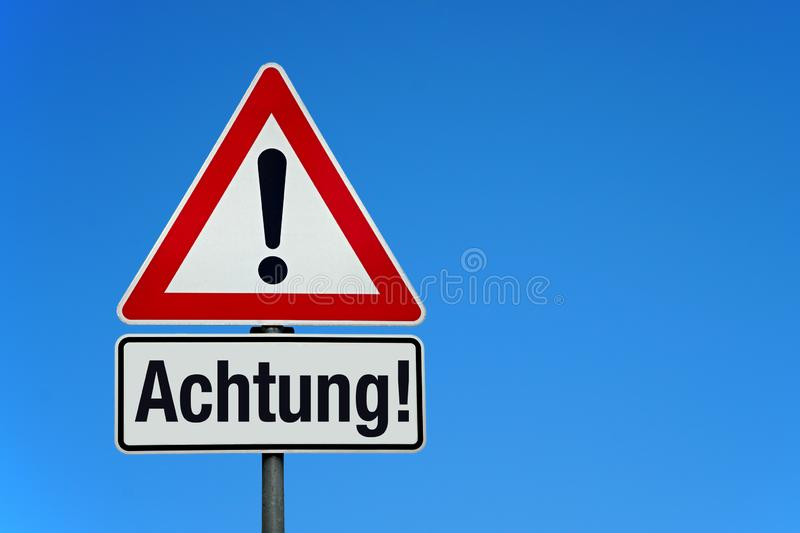

공고 : 댓글 정책 강화합니다
게시: 2019-10-07T20:44:12+09:00
방금 알타리무님의 댓글을 하나 지웠습니다.
자세히 기억은 안 나는데, '(실명을 적고) 모 정치인들의 아들들이 마약을 하고 있다는 소문이 파다하다'라는 식의 내용을 적으셨더군요. 여당과 야당 각각 공평하게 하나씩 이름을 쓰셨습니다. 그리고 거기에 대해 121부대님이 캡춰 고소 운운하셨고요. (그 글도 지웠습니다.) 제 글에 찬반하시는 양쪽 모두 제 독자분들인데, 제가 취미로 하는 블로그에서 복잡한 문제에 휘말리는거 전혀 원하지 않습니다. 아마 121부대님도 그냥 하신 말씀이겠습니다만 알타리님을 고소는 하지 말아주세요.

저는 가급적이면 댓글에 반응을 하거나 키보드 배틀을 벌이거나 하지는 않으려 합니다. 무의미하기도 하고, 그럴 시간도 부족하기 때문입니다. 그런데 기어코 알타리무님 때문에 이런 공고를 쓰게 되었으니 어떻게 보면 알타리무님의 승리이고 제 패배입니다.
아무튼 이런 사태의 재발을 방지하기 위해서 다음과 같은 댓글 정책을 알려드립니다. 지켜주시거나, 아니면 아예 댓글을 달지 않아주시면 고맙겠습니다.
1. 반말과 욕설은 발견 즉시 삭제하고 차단하겠습니다.
2. 불쾌한 비속어나 모욕적인 표현도 마찬가지로 발견 즉시 삭제하고 차단하겠습니다.
3. 명백한 가짜 뉴스나 특정인에 대한 근거없는 비방도 즉시 삭제하고 차단하겠습니다.
4. 별 내용 없는 짧은 댓글로 댓글창을 도배질하는 행위도 삭제하고 차단하겠습니다.
설명 드리자면 아래와 같습니다.
제가 발견 즉시 계속 지우는데도 최근 ㅠㅠ님이 집요하게 계속 욕설을 (저에게 하는 욕설은 아니었습니다) 적으셔서, 제가 지치더군요. 뭔가 방법이 없나 찾아보니 티스토리에도 '차단' 기능이 있더군요. 그래서 ㅠㅠ 님을 차단했는데, 너무 편리했습니다 !
최근에 댓글란이 댓망진창이었습니다. 제 글에 대한 비판이나 지지나 다 좋습니다만, 솔직히 불쾌한 비속어 등이 가득한 것을 보니 그런 소수의 분들이 제 블로그의 점잖은 대다수 독자분들의 품위까지 떨어뜨리는 것 같아 저도 기분이 좋지는 않았습니다.
특히 아까 알타리무님이 하신 것처럼 당사자에게 고소당해도 할 말이 없는 그런 댓글은 달지 마셔야 합니다.
무엇이 삭제 및 차단 대상이 되는 비속어나 모욕적 표현이냐는 것에 대해서는 그냥 제 주관대로 하겠습니다. 성적인 표현과 배설물 관련 표현 등은 무조건 삭제 대상입니다. (개인적으로 극혐입니다.) 한마디로 여러분 부모님이나 자녀분 앞에서 쓰실 수 있는 표현과 단어만 쓰시면 됩니다.
참고로 현재까지는 차단된 분은 ㅠㅠ님 뿐입니다. 기존에 달아놓으신 댓글은 일단 무시하고 앞으로의 댓글에 이 정책을 적용하겠습니다.
부디 이 블로그는 흥미거리로만 대해주시면 고맙겠습니다. 정치 분야에 관심이 많으신 분들께서 정말 열심히 참여하셔야 할 것은 각종 공직 선거에 대한 투표 참여라고 저는 생각합니다.
이런 언짢은 글 올리게 된 점 사과드리고, 아울러 이번 기회에 제 블로그를 방문해주시는 모든 분들께 보잘 것 없는 글 읽어주시는 것에 대해 다시 한번 감사드립니다.